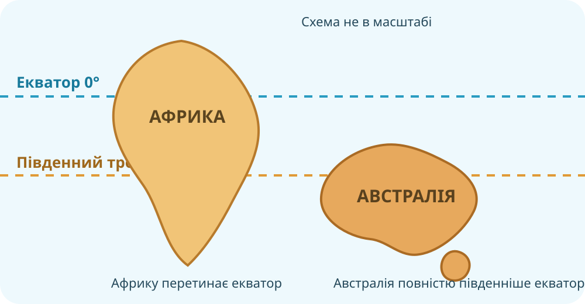
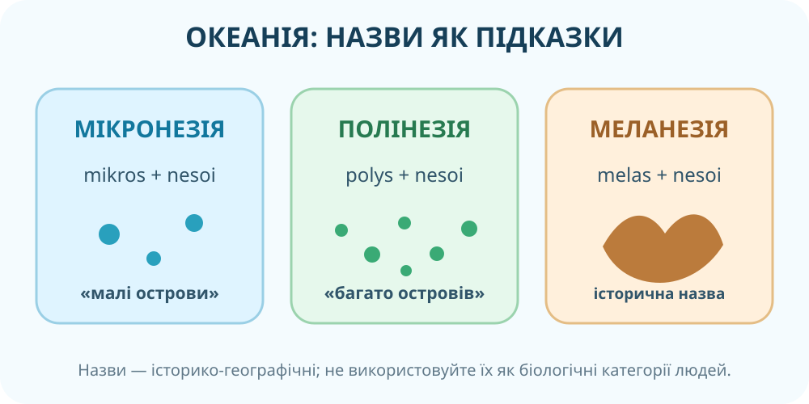

1. Читайте положення з реальної карти
OpenStreetMap. Масштабуйте карту й перевіряйте підписи берегових об’єктів.
Географічний паспорт
2. Крайні точки: перевірка просторової точності
Знайдіть на карті
Для материкової Австралії визначте напрям і приблизні координати крайніх точок. Назви можна перевірити на топографічних і довідкових картах Geoscience Australia.

3. Австралія проти Африки: не просто «обидві на півдні»

Локальна навчальна схема. Вона не замінює карту — використовуйте її тільки після власних спостережень.
Матриця доказів
Позначте, чи твердження є подібністю (П), відмінністю (В) або потребує уточнення (У).
4. Берегова лінія: перевірте твердження, а не повторюйте його


Парадокс масштабу
У шкільній географії Австралію часто називають материком зі слабо розчленованою береговою лінією. Але довжина берега залежить від масштабу вимірювання.
5. Океанія: що закодовано в назвах?

Назви трьох великих історико-географічних областей Океанії походять із грецьких коренів. Спробуйте відновити значення.
6. «Відкриття» Австралії: хто і для кого?
Розбір формулювання
Перевірте два джерела:
AIATSIS: Australia’s First Peoples ↗
National Museum of Australia: Cook and Kamay ↗
7. Коротке відеоспостереження
Дивіться з питанням
Під час відео зафіксуйте три фізико-географічні риси Австралії, які можна пов’язати з її положенням.
8. Теорія — тільки після дослідження
Географічне положення
Австралія повністю лежить у Південній та Східній півкулях. Південний тропік перетинає материк приблизно посередині, тому значна його частина розташована в тропічних широтах. Австралію омивають Індійський і Тихий океани.
Материк порівняно компактний і віддалений від великих масивів суходолу; на півночі через моря й острови Океанії він наближається до Південно-Східної Азії.
Чому порівняння з Африкою корисне
Обидва материки перетинає Південний тропік, але Африку перетинає ще й екватор, а Австралія повністю лежить на південь від нього. Австралія значно менша, ізольованіша й має інше співвідношення океанічного впливу та внутрішніх просторів.
Європейські подорожі XVI–XVIII століть доповнили карти материка, але історія людей в Австралії почалася за десятки тисяч років до них.
9. CER: доведіть головний висновок
Питання: «Географічне положення Австралії робить її природно схожою на Африку». Наскільки це твердження правильне?
10. Домашнє завдання
§ 26. Опрацюйте параграф і перевірте свою початкову гіпотезу.
Електронний підручник: Гільберг, Довгань, Совенко — Географія, 7 клас ↗